Transmission assembly reassembly (TB-50LS)
1. 1st and reverse brake piston installation
1. Install the 1st and reverse brake piston to the transmission case.
Note
- Coat the new O-ring with ATF, and install it to the 1st and reverse brake piston.
Caution
- Be careful not to damage the O-ring and the 1st and reverse brake piston.
| O-ring | |
| Inner diameter | Thickness |
| ： 131.60 mm { 5.1811 in } | ： 2.62 mm { 0.1031 in } |

- 1st and reverse brake piston
- O-ring
Note
- Coat the 2 new O-rings with ATF, and install them to the brake reaction sleeve.
Caution
- Be careful not to damage the O-rings and the brake reaction sleeve.
| O-ring | |
| Inner diameter | Thickness |
| ： 79.10 mm { 3.1142 in } | ： 2.62 mm { 0.1031 in } |
| ： 128.00 mm { 5.0394 in } | ： 2.62 mm { 0.1031 in } |

- O-ring
- Brake reaction sleeve
- O-ring
Note
- Coat the 2 new O-rings with ATF, and install them to the inner brake piston.
Caution
- Be careful not to damage the O-rings and the Inner brake piston.
| O-ring | |
| Inner diameter | Thickness |
| ： 67.35 mm { 2.6516 in } | ： 2.62 mm { 0.1031 in } |
| ： 116.40 mm { 4.5827 in } | ： 2.62 mm { 0.1031 in } |
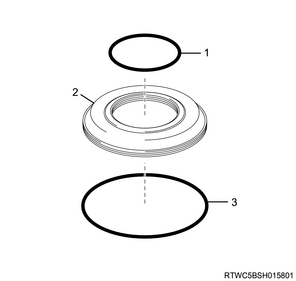
- O-ring
- Inner brake piston
- O-ring
Note
- Coat the sliding surface of the transmission case with ATF.
- Install the inner brake piston, brake reaction sleeve and 1st and reverse brake piston to the transmission case.
Caution
- Be careful not to damage the O-rings.
- 1st and reverse brake piston
- Brake reaction sleeve
- Inner brake piston
2. 1st and reverse brake return spring sub-assembly installation
1. Install the 1st and reverse brake return spring sub-assembly to the transmission case.
Note
- Place Spring compressor on the 1st and reverse brake return spring sub-assembly and compress the spring with a press.

SST: 5-8840-2966-0 - spring compressor
Note
- Using a screwdriver, install the shaft snap ring in the groove.
Caution
- Be careful not to expand the shaft snap ring too much.

- Spring compressor
- Shaft snap ring
3. Brake disc No.4 adjustment
1. Adjust the brake disc No.4.
Note
- Make sure that the 1st and reverse brake piston moves smoothly when pulling and releasing the compressed air gun lever while applying compressed air into the transmission case.
Note
- Using vernier calipers, measure the level difference between the upper surface of the 1st and reverse brake piston and the hitting surface of the flange at both ends across the 1st and reverse brake piston diameter, and calculate the average.
- The 1st and reverse brake piston must be securely installed to the end face of the transmission case.
： 36.35 to 37.09 mm { 1.4311 to 1.4602 in } Length A
Note
- Using vernier calipers, measure the thickness of the 2 flanges, 8 discs and the 7 plates altogether at both ends across the diameter, and calculate the average.
： 33.94 to 35.04 mm { 1.3362 to 1.3795 in } Length B
- Flange
- Length H
- Length A
- Length B
Note
- If the pack clearance is not within the specified range, select and a flange that brings the pack clearance to be within the specified range.
： 0.8 to 1.1 mm { 0.031 to 0.043 in } Pack Clearance
Note
- Pack Clearance= Length A - Length B - 0.55 mm {0.0217 in} - Length H
- There are 11 types of flanges that can be used to adjust the pack clearance.
- Select the one with the most appropriate thickness.
| Thickness H: | ||
| Flange | Mark | Difference |
| 0 | ： 0 mm { 0 in } | |
| 1 | ： 0.09 to 0.25 mm { 0.0035 to 0.0098 in } | |
| 3 | ： 0.23 to 0.39 mm { 0.0091 to 0.0154 in } | |
| 4 | ： 0.37 to 0.53 mm { 0.0146 to 0.0209 in } | |
| 5 | ： 0.51 to 0.67 mm { 0.0201 to 0.0264 in } | |
| 7 | ： 0.65 to 0.81 mm { 0.0256 to 0.0319 in } | |
| 8 | ： 0.79 to 0.95 mm { 0.0311 to 0.0374 in } | |
| 10 | ： 0.93 to 1.09 mm { 0.0366 to 0.0429 in } | |
| 11 | ： 1.07 to 1.23 mm { 0.0421 to 0.0484 in } | |
| 12 | ： 1.21 to 1.37 mm { 0.0476 to 0.0539 in } | |
| 14 | ： 1.35 to 1.51 mm { 0.0531 to 0.0594 in } | |
4. Rear planetary gear assembly installation
1. Install the bearing to the rear planetary gear assembly.
Note
- Apply ATF to the thrust bearing race No.9, thrust needle roller with race bearing and thrust needle roller bearing and install them to the rear planetary gear assembly.
- Thrust needle roller bearing
- Thrust bearing race No.9
- Thrust needle roller with race bearing
2. Install the rear planetary gear assembly to the transmission case.
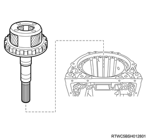
5. Brake disc No.4 installation
1. Install the intermediate shaft to the transmission case.
Note
- Apply ATF to the thrust bearing race No.7, thrust needle roller bearing and the thrust bearing race No.8 and install them to the intermediate shaft.
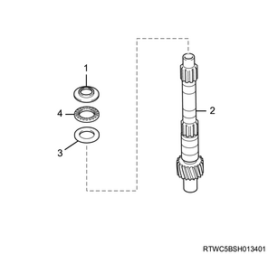
- Thrust bearing race No.7
- Intermediate shaft
- Thrust bearing race No.8
- Thrust needle roller bearing
Note
- Install the 1way clutch inner race sub-assembly, 1way clutch assembly No.3, rear planetary ring gear flange and rear planetary ring gear sub-assembly to the intermediate shaft.
- Install the intermediate shaft, rear planetary ring gear flange and rear planetary ring gear sub-assembly, 1way clutch assembly No.3 and 1way clutch inner race sub-assembly to the transmission case.
- 1way clutch inner race sub-assembly
- Intermediate shaft
- Rear planetary ring gear flange and rear planetary ring gear sub-assembly
- 1way clutch assembly No.3
2. Install the brake disc No.4 to the transmission case.
Note
- Install the 2 flanges, 8 discs and 7 plates to the transmission case as shown in the figure.
Caution
- Check the number and order of the flanges, discs and plates.
Note
- Install the flanges, discs and plates following the order shown in the figure.
- Flange
- Plate, 7 pcs.
- Flange
- Disc, 8 pcs.
Note
- Check that the snap ring is installed in the correct direction.
Caution
- If the hole snap ring is not installed in the correct direction, the automatic transmission may not work properly.
Note
- Using snap ring pliers, install the hole snap ring in the groove.
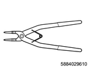
SST: 5-8840-2961-0 - snap ring pliers
Caution
- Align the opening of the hole snap ring with the position shown in the figure.
- Snap ring pliers
6. Plate stopper spring installation
1. Install the plate stopper spring to the transmission case.
7. Brake piston No.2 installation
1. Install the brake piston No.2 to the transmission case.
Note
- Install the brake piston No.2 and brake cylinder No.2 to the transmission case as shown in the figure.
Caution
- Align the hole of the brake piston No.2 and brake cylinder No.2 with the position shown in the figure.
8. Brake piston return spring sub-assembly No.2 installation
1. Install the brake piston return spring sub-assembly No.2 to the transmission case.
Note
- 4JJ1
- Install the 4 discs, 3 plates and flange to the transmission case as shown in the figure.
Caution
- Check the number and order of the discs, plates flange.
Note
- Install the discs, plates and flange following the order shown in the figure.
- Disc, 4 pcs.
- Plate, 3 pcs.
- Flange
Note
- 4JK1
- Install the 3 discs and 3 plates to the transmission case as shown in the figure.
Caution
- Check the number and order of the discs, plates flange.
Note
- Install the discs, plates and flange following the order shown in the figure.
- Disc, 3 pcs.
- Plate, 3 pcs.
Note
- Install the brake flange No.2 to the transmission case.
Note
- Using oil seal installer, spring compressor kit and a screwdriver, install the hole snap ring in the groove.
- Use the hat type adapter in the spring compressor kit.
- Fix the spring compressor kit with a suitable bolt.
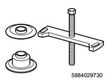
SST: 5-8840-2973-0 - spring compressor kit

SST: 5-8840-2962-0 - oil seal installer
Caution
- Align the opening of the hole snap ring with the position shown in the figure.
- Suitable bolt (M8x1.25, L=25 mm {0.98 in})
- Oil seal installer
- Spring compressor kit
- Adapter
9. Brake piston No.1 installation
1. Install the brake piston No.1 to the transmission case.
Note
- Install the brake piston No.1 and brake cylinder No.1 to the transmission case as shown in the figure.
Caution
- Align the hole of the brake piston No.1 and brake cylinder No.1 with the position shown in the figure.
Note
- Install the brake piston return spring sub-assembly to the transmission case.
Note
- Using oil seal installer, spring compressor kit and a screwdriver, install the hole snap ring in the groove.
- Use the disk type adapter in the spring compressor kit.
- Fix the spring compressor kit with a suitable bolt.
SST: 5-8840-2973-0 - spring compressor kit
SST: 5-8840-2962-0 - oil seal installer
Caution
- Align the opening of the hole snap ring with the position shown in the figure.
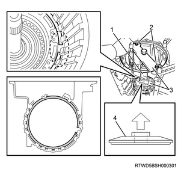
- Suitable bolt (M8x1.25, L=25 mm {0.98 in})
- Oil seal installer
- Spring compressor kit
- Adapter
10. Brake disc No.1 adjustment
1. Adjust the brake piston No.1.
Note
- Make sure that the brake piston No.1 moves smoothly when pulling and releasing the compressed air gun lever while applying compressed air into the transmission case.
Note
- 4JJ1
- Using vernier calipers, measure the level difference between the upper surface of the brake piston No.1 and the hitting surface of the flange at both ends across the brake piston No.1 diameter, and calculate the average.
- The brake piston No.1 and brake cylinder No.1 must be securely installed to the end face of the transmission case.
： 19.74 to 20.22 mm { 0.7772 to 0.7961 in } Length A
Note
- Using vernier calipers, measure the thickness of the 4 discs and the 4 plates altogether at both ends across the diameter, and calculate the average.
- Length B is a value which includes the measured value and the correction value.
： 18.93 to 19.39 mm { 0.7453 to 0.7634 in } Length B
correction value： 2.2 mm { 0.087 in }
- Length H
- Length A
- Length B
Note
- If the piston stroke is not within the specified range, select and install a flange that brings the piston stroke to be within the specified range.
： 0.56 to 0.86 mm { 0.0220 to 0.0339 in } Piston stroke
Note
- Piston stroke= Length A - Length B + 2.20 mm {0.0866 in} - Length H
- There are 4 types of flanges that can be used to adjust the piston stroke.
- Select the one with the most appropriate thickness.
| Thickness H | ||
| Flange | Mark | Thickness |
| 0 | ： 1.95 to 2.05 mm { 0.0768 to 0.0807 in } | |
| 1 | ： 2.15 to 2.25 mm { 0.0846 to 0.0886 in } | |
| 2 | ： 2.35 to 2.45 mm { 0.0925 to 0.0965 in } | |
| 3 | ： 2.55 to 2.65 mm { 0.1004 to 0.1043 in } | |
Note
- 4JK1
- Using vernier calipers, measure the level difference between the upper surface of the brake piston No.1 and the hitting surface of the flange at both ends across the brake piston No.1 diameter, and calculate the average.
- The brake piston No.1 and brake cylinder No.1 must be securely installed to the end face of the transmission case.
： 15.29 to 15.77 mm { 0.6020 to 0.6209 in } Length A
Note
- Using vernier calipers, measure the thickness of the 3 discs and the 3 plates altogether at both ends across the diameter, and calculate the average.
： 14.72 to 15.12 mm { 0.5795 to 0.5953 in } Length B
- Length H
- Length A
- Length B
Note
- If the piston stroke is not within the specified range, select and install a flange that brings the piston stroke to be within the specified range.
： 0.56 to 0.86 mm { 0.0220 to 0.0339 in } Piston stroke
Note
- Piston Stroke= Length A - Length B + 2.20 mm {0.0866 in} - Length H
- There are 4 types of flanges that can be used to adjust the piston stroke.
- Select the one with the most appropriate thickness.
| Thickness H | ||
| Flange | Mark | Thickness |
| 0 | ： 1.95 to 2.05 mm { 0.0768 to 0.0807 in } | |
| 1 | ： 2.15 to 2.25 mm { 0.0846 to 0.0886 in } | |
| 2 | ： 2.35 to 2.45 mm { 0.0925 to 0.0965 in } | |
| 3 | ： 2.55 to 2.65 mm { 0.1004 to 0.1043 in } | |
11. Middle planetary gear assembly installation
1. Install the middle planetary gear assembly to the transmission case.
Note
- Install the thrust bearing race No.4 and the thrust needle roller bearing to the middle planetary gear assembly.
- Install the middle planetary gear assembly and planetary sun gear.
- Thrust needle roller bearing
- Thrust bearing race No.4
- Middle planetary gear assembly
- Planetary sun gear
12. Front planetary ring gear installation
1. Install the front planetary ring gear to the transmission case.
Note
- Apply ATF to the thrust bearing race No.3 and the thrust needle roller bearing and install them to the front planetary ring gear.
- Install the front planetary ring gear and front planetary ring gear flange and middle planetary ring gear.
- Thrust bearing race No.3
- Thrust needle roller bearing
- Front planetary ring gear and front planetary ring gear flange and middle planetary ring gear
13. Front planetary gear assembly installation
1. Install the front planetary gear assembly to the transmission case.
Note
- Apply ATF to the planetary carrier thrust washer No.2 and install it to the front planetary gear assembly.
- Install the front planetary gear assembly.
- Front planetary gear assembly.
- Planetary carrier thrust washer No.2
14. 1way clutch assembly No.1 installation
1. Install the 1way clutch assembly No.1 to the transmission case.
Note
- Apply ATF to the planetary carrier thrust washer No.1 and install it to the 1way clutch inner race sub-assembly.
- Install the 1way clutch assembly No.1 to the 1way clutch inner race sub-assembly.
- Install the 1way clutch inner race sub-assembly.
- 1way clutch assembly No.1
- Planetary carrier thrust washer No.1
- 1way clutch inner race sub-assembly
15. Brake disc No.1 installation
1. Install the brake disc No.1 to the transmission case.
Note
- 4JJ1
- Install the 4 discs, 4 plates and flange to the transmission case as shown in the figure.
Caution
- Check the number and order of the discs, plates and flange.
Note
- Install the discs, plates and flange following the order shown in the figure.
- Flange
- Plate, 4 pcs.
- Disc, 4 pcs.
Note
- 4JK1
- Install the 3 discs, 3 plates and flange to the transmission case as shown in the figure.
Caution
- Check the number and order of the discs, plates and flange.
Note
- Install the discs, plates and flange following the order shown in the figure.
- Flange
- Plate, 3 pcs.
- Disc, 3 pcs.
16. Brake piston No.3 installation
1. Install the brake piston No.3 to the transmission case.
Note
- Install the brake piston return spring sub-assembly No.3, 2nd brake piston No.3 and brake piston No.3 to the transmission case as shown in the figure.
Caution
- Align the hole of the brake piston return spring sub-assembly No.3, 2nd brake piston No.3 and brake piston No.3 with the position shown in the figure.
Note
- Check that the hole snap ring is installed in the correct direction.
Caution
- If the hole snap ring is not installed in the correct direction, the automatic transmission may not work properly.
Note
- Using Snap ring pliers, install the hole snap ring in the groove.
SST: 5-8840-2961-0 - snap ring pliers
Caution
- Align the opening of the hole snap ring with the position shown in the figure.
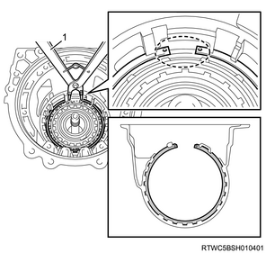
- Snap ring pliers
17. 1way clutch assembly No.2 installation
Note
- Apply ATF to the clutch hub thrust washer and install it to the 1way clutch assembly No.2.
- Install the 1way clutch assembly No.2.
- 1way clutch assembly No. 2
- Clutch hub thrust washer
18. Brake disc No.3 installation
1. Install the brake disc No.3 to the transmission case.
Note
- Install the cushion plate and plates, discs and flange to the transmission case as shown in the figure.
Caution
- Check the number and order of the cushion plate and plates, discs and flange.
Note
- Install the cushion plate and plates, discs and flange following the order shown in the figure.
- Flange
- Plate, 4 pcs.
- Cushion plate
- Disc, 4 pcs.
Note
- Using a screwdriver, install the hole snap ring in the groove.
Caution
- Align the opening of the hole snap ring with the position shown in the figure.
19. Forward clutch assembly installation
1. Install the forward clutch assembly to the transmission case.
Note
- Apply ATF to the clutch drum thrust washer, and install it to the forward clutch assembly and direct clutch assembly.
- Install the 1way clutch assembly No.2.
- Apply ATF to the clutch hub thrust washer and install it to the 1way clutch assembly No.2.
- Clutch drum thrust washer
Note
- Apply ATF to the thrust bearing race and the thrust needle roller bearing and install them to the forward clutch assembly and direct clutch assembly.
- Thrust bearing race
- Thrust needle roller bearing
Note
- Install the forward clutch assembly and direct clutch assembly.
Caution
- Be careful not to drop the forward clutch assembly and direct clutch assembly.
- Be careful not to drop the 1way clutch assembly No.2.
20. Oil pump assembly installation
1. Install the oil seal to the oil pump assembly using special tool.
SST: 5-8840-2962-0 - oil seal installer
- Oil seal installer
2. Install the oil pump assembly to the transmission case.
Note
- Coat the new O-ring with ATF, and install it to the oil pump assembly.
| Inner diameter | Thickness |
| ： 218.40 mm { 8.5984 in } | ： 3.50 mm { 0.1378 in } |
Note
- Apply ATF to the thrust needle roller bearing and the thrust bearing race No.1 and install them to the oil pump assembly.
- Thrust bearing race No.1
- Thrust needle roller bearing
- O-ring
Note
- Install the oil pump assembly.
Caution
- Be careful not to drop the oil pump assembly.
Note
- Apply DOW CORNING TORAY SH780 or equivalent to the 10 bolts and install them to the oil pump assembly.
Tightening torque： 21 N・m { 2.1 kgf・m / 15 lb・ft }
- M8 x 1.25 x 40 mm
- Sealant, DOW CORNING TORAY SH780 or equivalent
21. Thrust bearing race installation
Note
- The following applies to 2WD.
1. Install the thrust bearing race to the rear planetary gear assembly.
Note
- Apply ATF to the bearing race, thrust needle roller bearing and the bearing race install them to the rear planetary gear assembly.
- Using Snap ring pliers, install the snap ring.

- Snap ring
- Bearing race
- Thrust needle roller bearing
- Bearing race
22. Rear planetary gear assembly adjustment
Note
- The following applies to 2WD.
1. Adjust the rear planetary gear assembly.
Note
- Using a feeler gauge, measure the clearance between the snap ring and the bearing race.
： 0.02 to 0.12 mm { 0.0008 to 0.0047 in } End play
- Mark
Note
- If the clearance is not within the specified range, select another bearing race that brings the clearance within the specified range.
- There are 12 different thicknesses for the bearing race.
- 3.80 mm {0.1496 in}
- 3.85 mm {0.1516 in}
- 3.90 mm {0.1535 in}
- 3.95 mm {0.1555 in}
- 4.00 mm {0.1575 in}
- 4.05 mm {0.1594 in}
- 4.10 mm {0.1614 in}
- 4.15 mm {0.1634 in}
- 4.20 mm {0.1654 in}
- 4.25 mm {0.1673 in}
- 4.30 mm {0.1693 in}
- 4.35 mm {0.1713 in}
23. Forward clutch assembly adjustment
1. Adjust the forward clutch assembly.
Note
- Check that the forward clutch assembly turns smoothly.
- Using a dial indicator, measure the forward clutch assembly end play.
： 0.35 to 1.05 mm { 0.0138 to 0.0413 in } End play
24. Oil seal installation
1. Install the oil seal to the transmission case.
Note
- Using oil seal installer and a hammer, install the 2 new oil seals.
SST: 5-8840-2169-0 - oil seal installer
Caution
- Be careful not to damage the transmission case.

- Oil seal installer
25. Manual valve lever shaft installation
1. Install the manual valve lever shaft to the transmission case.
Note
- Install the new spacer to the manual valve lever.
- Install the manual valve lever shaft to the transmission case through the manual valve lever.
Note
- Using a hammer, drive in the new spring pin.

- Spring pin
Note
- Align the manual valve lever shaft indentation with the spacer hole, and stake them together with the punch.
- Make sure that the manual valve lever shaft rotates smoothly.
26. Parking lock pawl installation
1. Install the parking lock pawl to the transmission case.
Note
- Install the parking lock pawl.
- Install the snap ring to the parking lock pawl shaft.
- Install the parking lock pawl shaft and the torsion spring.
Caution
- Be careful not to apply too much force to the torsion spring.
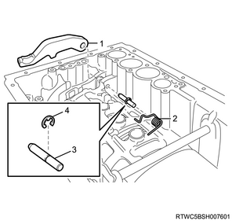
- Parking lock pawl
- Torsion spring
- Parking lock pawl shaft
- Snap ring
27. Parking lock rod installation
1. Install the parking lock rod to the transmission case.
Note
- Connect the parking lock rod to the manual valve lever.
28. Parking lock pawl bracket installation
1. Install the parking lock pawl bracket to the transmission case.
Note
- Install the parking lock pawl bracket with the 3 bolts.
Tightening torque： 7 N・m { 0.7 kgf・m / 62 lb・in }

Note
- Shift the manual valve lever to the P position, and confirm the rear planetary gear assembly is correctly locked up by the parking lock pawl.
29. Accumulator valve installation
1. Install the accumulator valve to the transmission case.
Note
- Install the accumulator valve and the spring to the transmission case as shown in the figure.
| Spring | ||
| Free | Outer | Color |
| ： 48.76 mm { 1.9197 in } | ： 16.60 mm { 0.6535 in } | Light green |
| ： 30.40 mm { 1.1968 in } | ： 11.40 mm { 0.4488 in } | Pink |
30. C3 accumulator piston installation
1. Install the C3 accumulator piston to the transmission case.
Note
- Coat the 2 new O-rings with ATF, and install them to the accumulator piston.
Caution
- Be careful not to damage the O-rings and accumulator piston.
| O-ring | |
| Inner diameter | Thickness |
| ： 26.75 mm { 1.0531 in } | ： 2.62 mm { 0.1031 in } |
| ： 34.29 mm { 1.3500 in } | ： 2.62 mm { 0.1031 in } |
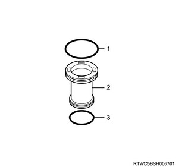
- O-ring
- C3 accumulator piston
- O-ring
Note
- Install the accumulator piston and the 2 accumulator springs to the transmission case as shown in the figure.
| Accumulator springs | |||
| Piston | Free | Outer | Color |
| C3 | ： 44.00 mm { 1.7323 in } | ： 14.00 mm { 0.5512 in } | Yellow |
| ： 73.35 mm { 2.8878 in } | ： 19.90 mm { 0.7835 in } | Red | |
31. B3 accumulator piston installation
1. Install the B3 accumulator piston to the transmission case.
Note
- Coat the 2 new O-rings with ATF, and install them to the accumulator piston.
| O-ring | ||
| Piston | Inner diameter | Thickness |
| B3 | ： 23.55 mm { 0.9272 in } | ： 2.62 mm { 0.1031 in } |
| ： 34.29 mm { 1.3500 in } | ： 2.62 mm { 0.1031 in } | |
Caution
- Be careful not to damage the O-rings and accumulator piston.

- O-ring
- B3 accumulator piston
- O-ring
Note
- Using a screwdriver, install the spring and the snap ring to the accumulator piston.
Caution
- Be careful not to damage the accumulator piston.
| Spring | |||
| Piston | Free | Outer | Color |
| B3 | ： 24.77 mm { 0.9752 in } | ： 16.30 mm { 0.6417 in } | Purple |
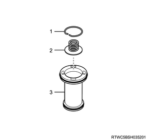
- Snap ring
- Spring
- B3 accumulator piston
Note
- Install the accumulator piston and the accumulator spring to the transmission case as shown in the figure.
| Accumulator springs | |||
| Piston | Free | Outer | Color |
| B3 | ： 70.50 mm { 2.7756 in } | ： 19.70 mm { 0.7756 in } | Purple |
32. C2 accumulator piston installation
1. Install the C2 accumulator piston to the transmission case.
Note
- Coat the 2 new O-rings with ATF, and install them to the accumulator piston.
| O-ring | ||
| Piston | Inner diameter | Thickness |
| C2 | ： 20.00 mm { 0.7874 in } | ： 2.62 mm { 0.1031 in } |
| ： 28.73 mm { 1.1311 in } | ： 2.62 mm { 0.1031 in } | |
Caution
- Be careful not to damage the O-rings and accumulator piston.

- O-ring
- C2 accumulator piston
- O-ring
Note
- Using a screwdriver, install the spring and the snap ring to the accumulator piston.
Caution
- Be careful not to damage the accumulator piston.
| Spring | |||
| Piston | Free | Outer | Color |
| C2 | ： 14.16 mm { 0.5575 in } | ： 11.30 mm { 0.4449 in } | - |

- Snap ring
- Spring
- C2 accumulator piston
Note
- Install the accumulator piston and the accumulator spring to the transmission case as shown in the figure.
| Accumulator springs | |||
| Piston | Free | Outer | Color |
| C2 | ： 62.00 mm { 2.4409 in } | ： 15.90 mm { 0.6260 in } | White |
33. Gasket installation
1. Install the gasket to the transmission case.
Note
- Coat the 3 new gaskets and the 3 new gaskets with ATF, and install them to the transmission.
Caution
- Be careful not to damage the gasket.

- Gasket
- Gasket
34. Check valve sub-assembly installation
1. Install the check valve sub-assembly to the transmission case.
Note
- Install the check valve sub-assembly and the spring to the transmission case as shown in the figure.
| Spring | |
| Free | Outer |
| ： 38.55 mm { 1.5177 in } | ： 4.861 mm { 0.19138 in } |
35. Valve body assembly installation
1. Install the valve body assembly to the transmission case.
Note
- Install the parking lock rod to the manual valve lever as shown in the figure.
- Aligning the bolt holes, temporarily install the valve body assembly.
Caution
- When installing, be sure to put the transmission internal harness in the concave portion of the separator plate in the valve body assembly as shown in the figure.
- Do not pinch the transmission internal harness between the separator plate and the valve body assembly.
Note
- Install the 19 bolts and temporarily tighten by hand.
- M6x1.0x25mm
- M6x1.0x36mm
Note
- Tighten the 19 bolts.
- Be sure to tighten the inner bolts first.
Tightening torque： 11 N・m { 1.1 kgf・m / 97 lb・in }

36. Manual detent spring sub-assembly installation
1. Install the Manual detent spring sub-assembly to the valve body assembly.
Note
- Install the manual detent spring sub-assembly and the manual detent spring cover with the flange bolt to the valve body assembly.
Tightening torque： 10 N・m { 1.0 kgf・m / 89 lb・in }

- Manual detent spring cover
- M6x1.0x14mm
- Manual detent spring sub-assembly
37. Transmission internal harness installation
1. Install the transmission internal harness to the transmission case.
Note
- Install a new O-ring to the transmission internal harness.
| O-ring | |
| Inner diameter | Thickness |
| ： 21.80 mm { 0.8583 in } | ： 2.40 mm { 0.0945 in } |
Tightening torque： 5 N・m { 0.5 kgf・m / 44 lb・in } M6x1.0x16mm

2. Install the transmission internal harness to the valve body assembly.
Note
- Install the transmission fluid temperature sensor and the transmission fluid temperature sensor clamp to the valve body assembly with the bolt.
Tightening torque： 10 N・m { 1.0 kgf・m / 89 lb・in } M6x1.0x12mm
Tightening torque： 11 N・m { 1.1 kgf・m / 97 lb・in } M6x1.0x36mm

- M6x1.0x12mm
- M6x1.0x36mm
Note
- Connect the transmission internal harness to the valve body assembly wire harness clamp.
- Connect the 7 solenoid assembly connectors.

- Valve body assembly wire harness clamp
38. Oil strainer installation
1. Install the oil strainer to the valve body assembly.
Note
- Deep type oil pan
- Coat a new O-ring with ATF and install it to the oil strainer.
| O-ring | |
| Inner diameter | Thickness |
| ： 31.00 mm { 1.2205 in } | ： 2.72 mm { 0.1071 in } |
Note
- Install the oil strainer to the valve body assembly with the 4 bolts.
Tightening torque： 10 N・m { 1.0 kgf・m / 89 lb・in }

- M6x1.0x12mm
Note
- Shallow type oil pan
- Coat a new O-ring with ATF and install it to the oil strainer.
| O-ring | |
| Inner diameter | Thickness |
| ： 31.00 mm { 1.2205 in } | ： 2.72 mm { 0.1071 in } |
Note
- Install the oil strainer to the valve body assembly with the 4 bolts.
Tightening torque： 10 N・m { 1.0 kgf・m / 89 lb・in }

- M6x1.0x16mm
39. Oil pan magnet installation
1. Install the oil pan magnet to the oil pan.
Note
- Install the 4 oil pan magnets to the oil pan.
Caution
- Clean the oil pan magnet before install it.
40. Oil pan cleaning
Note
- Clean the contact surfaces of the oil pan and transmission case.
Caution
- Make sure that no foreign matter is on the contact surfaces to ensure a secure fit between the oil pan and transmission case.
41. Oil pan installation
1. Install the oil pan to the transmission case.
Note
- Install a new oil pan gasket and the oil pan to the transmission case.
Caution
- Be careful not to damage the fitting surfaces of the transmission case and the oil pan.
- Be careful not to deform the oil pan.
Note
- Install the 20 bolts to the transmission case.
- Be reminded that bolts might be damaged if tightened too much since the oil pan gasket is cork-made and there is little tightening sense.
Tightening torque： 7 N・m { 0.7 kgf・m / 62 lb・in }
- Oil pan gasket
- M6 x 1.0 x 14.5 mm
42. Adapter housing cleaning
Note
- The following applies to 4WD.
- Remove any sealant and be careful not to get oil on the contact surfaces of the transmission case and the adapter housing.
- Clean the contact surfaces of the transmission case and the adapter housing and the bolt holes.
- Completely remove sealant and oil with white gasoline or equivalent.
43. Adapter housing installation
Note
- The following applies to 4WD.
1. Apply liquid gasket to the adapter housing.
Note
- Apply ThreeBond 1281B or equivalent to the adapter housing as shown in the figure.
Caution
- Spread ThreeBond 1281B or equivalent over the contact surface.
- Do not apply liquid gasket to the transmission case.

- Liquid gasket, ThreeBond 1281B or equivalent
2. Install the adapter housing to the transmission case.
Note
- Temporarily tighten the 9 bolts by hand as shown in the figure.
- Tighten the 9 bolts.
Tightening torque： 34 N・m { 3.5 kgf・m / 25 lb・ft } M8
Tightening torque： 23 N・m { 2.3 kgf・m / 17 lb・ft } M10
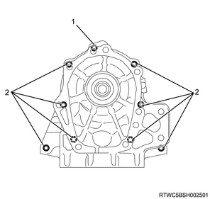
- M8x1.25x45mm
- M10x1.5x50mm, Seal bolt
44. Rear cover oil seal installation
Note
- The following applies to 4WD.
1. Install the rear cover oil seal to the adapter housing.
Note
- Using oil seal installer and a hammer, install the new rear cover oil seal to the adapter housing.
- Set the large stepped portion of the adapter toward the installer body.
Caution
- Be careful not to damage the rear cover oil seal and the adapter housing.
SST: 5-8840-2964-0 - oil seal installer
Press fitting depth： 1.5 to 2.5 mm { 0.059 to 0.098 in } From the end of the adapter housing
- Oil seal installer
- Installer body
- Adapter
- 5.6 mm {0.220 in}
2. Apply the grease to the rear cover oil seal.
Note
- Apply grease to the rear cover oil seal lip.
45. Extension housing assembly cleaning
Note
- The following applies to 2WD.
- Remove any sealant and be careful not to get oil on the contact surfaces of the transmission case and extension housing assembly.
- Clean the contact surfaces of the transmission case and the extension housing assembly and the bolt holes.
- Completely remove sealant and oil with white gasoline or equivalent.
46. Extension housing assembly installation
Note
- The following applies to 2WD.
1. Apply liquid gasket to the extension housing assembly.
Note
- Apply ThreeBond 1281B or equivalent to the extension housing assembly as shown in the figure.
Caution
- Spread liquid gasket over the contact surface.
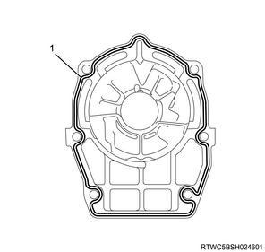
- Liquid gasket, ThreeBond 1281B or equivalent
2. Install the extension housing assembly to the transmission case.
Note
- Temporarily tighten the 6 bolts by hand.
- Do not apply liquid gasket to the transmission case.
- Tighten the 8 bolts.
Tightening torque： 34 N・m { 3.5 kgf・m / 25 lb・ft }

- M10x1.5x45mm, Seal bolt
- M10x1.5x35mm, Seal bolt
47. Deflector installation
Note
- The following applies to 2WD.
1. Install the oil seal to the extension housing assembly.
Note
- Using oil seal installer and a hammer, install the new rear cover oil seal to the extension housing assembly.
- Set the small stepped portion of the adapter toward the installer body.
Caution
- Be careful not to damage the rear cover oil seal and the extension housing assembly.
SST: 5-8840-2964-0 - oil seal installer
Press fitting depth： 5.4 to 5.8 mm { 0.213 to 0.228 in } From the end of the extension housing assembly
- Oil seal installer
- Installer body
- Adapter
- 2 mm {0.08 in}
2. Apply the grease to the oil seal.
Note
- Apply grease to the rear cover oil seal lip.
3. Install the deflector to the extension housing assembly.
Note
- Using deflector installer and a hammer, install the deflector to the extension housing assembly.
SST: 5-8840-2965-0 - deflector installer
Caution
- Be careful not to damage the extension housing assembly and the deflector.
48. Converter housing installation
1. Install the converter housing to the transmission case.
Note
- Temporarily tighten the 10 bolts by hand as shown in the figure.
- M10x1.5x35mm
- M10x1.5x35mm, Seal bolt
- M12x1.75x38mm, Seal bolt
Note
- Tighten the 10 bolts.
- The numbers shown in the figure indicate the order of bolts.
tightening torque： 34 N・m { 3.5 kgf・m / 25 lb・ft } M10x1.5
tightening torque： 57 N・m { 5.8 kgf・m / 42 lb・ft } M12x1.75
- M10x1.5
- M12x1.75
49. Inhibitor switch installation
1. Install the inhibitor switch to the transmission case.
Note
- Temporarily install the inhibitor switch with the new bolt.
- Tighten the bolt after adjusting the inhibitor switch to the N position.
Note
- Install the new washer with the nut.
Tightening torque： 7 N・m { 0.7 kgf・m / 62 lb・in }
Note
- Using a screwdriver, stake the washer.
Note
- Adjust the manual valve lever shaft to the N position.
- Align the groove and neutral basic line.
- Hold in position and tighten the bolt.
Tightening torque： 13 N・m { 1.3 kgf・m / 115 lb・in }
- Neutral basic line
- Groove
50. Elbow installation
1. Install the elbow to the transmission case.
Note
- Coat the new 2 O-rings with ATF, and then install it onto the elbows.
- Install the 2 elbows onto the transmission case in the specified direction.
Tightening torque： 28 N・m { 2.9 kgf・m / 21 lb・ft }
- Elbow
- 0˚±2˚
51. Output speed sensor installation
1. Install the output speed sensor to the transmission case.
Tightening torque： 5 N・m { 0.5 kgf・m / 44 lb・in }
Caution
- Be careful not to damage the output speed sensor.
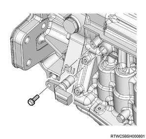
52. Turbine speed sensor installation
1. Install the turbine speed sensor to the transmission case.
Tightening torque： 5 N・m { 0.5 kgf・m / 44 lb・in }
Caution
- Be careful not to damage the turbine speed sensor.

53. Breather tube installation
1. Install the breather tube to the transmission case.
Note
- Install the bolt in order to install the breather tube, and 2 bolts from the transmission case.
Tightening torque： 5 N・m { 0.5 kgf・m / 44 lb・in }

- Breather hose
- Breather tube
- M6x1.0x10mm
54. Torque converter assembly installation
1. Install the torque converter assembly to the transmission.
Note
- Using a screwdriver, position the drive gear on the oil pump assembly in the center.
- Then install the torque converter assembly on the transmission.
Caution
- Be careful not to damage the oil seal.
- Be careful not to drop the torque converter assembly.
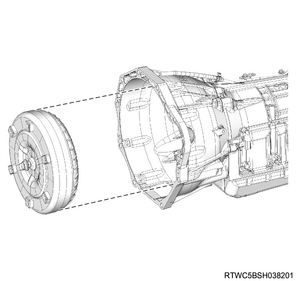
55. Torque converter assembly adjustment
1. Adjust the torque converter assembly.
Note
- Measure the dimension from the end face of the converter housing to the torque converter assembly as shown in the figure, and check that the torque converter assembly is installed properly.
Standard： 68 mm { 2.68 in }